Black Church Vates
Black Church Vates

Cabalist set
Lv 45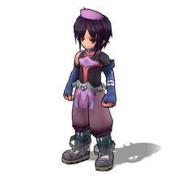
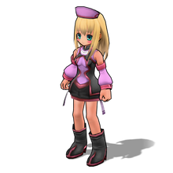
How to get
- All pieces from Fallen Titania, a reward of the Lv 45 Armor Quest
Expert job · Spell User
A dark magic job with curses, MP drain and transformations, played as a caster or up close.
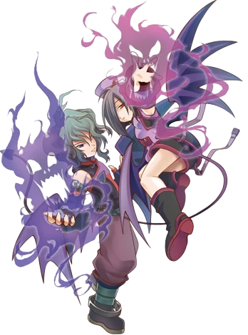
Requirement: MAG 30 or higher and Job Level 30 or higher as a Warlock.
Talk to the Black Church Vates and choose to change your job. He asks you to bring two offerings to the darkness.
Collect 1 of each item.
 Iron StomachPassive · Max Lv 5
Iron StomachPassive · Max Lv 5| Lv | Food recovery bonus | Food use time reduction |
|---|---|---|
| 1 | +15% | 15% |
| 2 | +20% | 20% |
| 3 | +25% | 25% |
| 4 | +30% | 30% |
| 5 | +35% | 35% |
Deals Dark physical damage and restores MP to the caster based on the damage dealt.
| Lv | SP | Cast time | Cooldown | Damage rate | MP recovery |
|---|---|---|---|---|---|
| 1 | 15 | 1 sec | 1 sec | 100% | 18% of damage dealt |
| 2 | 15 | 1 sec | 1 sec | 100% | 21% of damage dealt |
| 3 | 15 | 1 sec | 1 sec | 100% | 24% of damage dealt |
| 4 | 15 | 1 sec | 1 sec | 100% | 27% of damage dealt |
| 5 | 15 | 1 sec | 1 sec | 100% | 30% of damage dealt |
Increase Fairy Property DamagePassive · Max Lv 5Increases damage dealt to Fairy/Element-type monsters.
| Lv | Damage bonus |
|---|---|
| 1 | +3% |
| 2 | +6% |
| 3 | +9% |
| 4 | +12% |
| 5 | +15% |
Strikes one target with Dark physical damage.
| Lv | MP | SP | Cast time | Cooldown | Damage rate |
|---|---|---|---|---|---|
| 1 | 5 | 6 | 1 sec | 1 sec | 210% |
| 2 | 7 | 6 | 1 sec | 1 sec | 245% |
| 3 | 9 | 8 | 1 sec | 1 sec | 280% |
| 4 | 12 | 8 | 1 sec | 1 sec | 315% |
| 5 | 15 | 10 | 1 sec | 1 sec | 350% |
 Undead AnalysisActive debuff · Max Lv 3
Undead AnalysisActive debuff · Max Lv 3| Lv | Cast time | Cooldown | Drop rate bonus |
|---|---|---|---|
| 1 | 0 sec | 0.5 sec | +10% |
| 2 | 0 sec | 0.5 sec | +20% |
| 3 | 0 sec | 0.5 sec | +30% |
Darkness ContractPassive · Max Lv 3| Lv | Dark contract bonus | Dark ATK upper limit |
|---|---|---|
| 1 | +5 | +5 |
| 2 | +10 | +10 |
| 3 | +15 | +15 |
| Lv | MP | Cast time | Cooldown | Sleep chance | Sleep duration | Field duration |
|---|---|---|---|---|---|---|
| 1 | 25 | 3 sec | 2 sec | 20% | 7 sec | 15 sec |
| 2 | 30 | 3.5 sec | 2 sec | 30% | 7 sec | 15 sec |
| 3 | 35 | 4 sec | 2 sec | 40% | 7 sec | 15 sec |
| 4 | 40 | 4.5 sec | 2 sec | 50% | 7 sec | 15 sec |
| 5 | 45 | 5 sec | 2 sec | 60% | 7 sec | 15 sec |
Curse AggravationPassive · Max Lv 5| Lv | Status chance bonus |
|---|---|
| 1 | +40 |
| 2 | +60 |
| 3 | +80 |
| 4 | +90 |
| 5 | +95 |
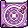
Shadow PentagramActive field buff · Max Lv 5| Lv | MP | Cast time | Cooldown | Dark field element | Duration |
|---|---|---|---|---|---|
| 1 | 12 | 3 sec | 0.5 sec | +50 | 30 sec |
| 2 | 15 | 3 sec | 0.5 sec | +50 | 35 sec |
| 3 | 18 | 3 sec | 0.5 sec | +50 | 40 sec |
| 4 | 21 | 3 sec | 0.5 sec | +50 | 45 sec |
| 5 | 24 | 3 sec | 0.5 sec | +50 | 50 sec |
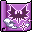
MetamorphosisActive self-buff · Max Lv 3| Lv | MP | Cast time | Cooldown | Granted skills | Duration |
|---|---|---|---|---|---|
| 1 | 30 | 0.5 sec | 0.5 sec | Exsanguinate, Enshroud | 300 sec |
| 2 | 30 | 0.5 sec | 0.5 sec | Bestial Wrath, Growl | 300 sec |
| 3 | 30 | 0.5 sec | 0.5 sec | Energy Shield, Magic Shield, Mystical Shockwave | 300 sec |
| Lv | MP | Cast time | Cooldown | Damage rate |
|---|---|---|---|---|
| 1 | 14 | 0.5 sec | 2 sec | 180% |
| 2 | 16 | 1 sec | 2 sec | 210% |
| 3 | 18 | 1.5 sec | 2 sec | 240% |
| 4 | 20 | 2 sec | 2 sec | 270% |
| 5 | 22 | 2.5 sec | 2 sec | 300% |
 EngravingActive magic trap · Max Lv 5
EngravingActive magic trap · Max Lv 5| Lv | MP | SP | Cast time | Cooldown | Mark duration | Max marks | Waiting Stiffness chance |
|---|---|---|---|---|---|---|---|
| 1 | 3 | 3 | 0 sec | 0.5 sec | 8 sec | 3 | 10% |
| 2 | 4 | 3 | 0 sec | 0.5 sec | 10 sec | 4 | 20% |
| 3 | 5 | 3 | 0 sec | 0.5 sec | 12 sec | 4 | 30% |
| 4 | 6 | 3 | 0 sec | 0.5 sec | 14 sec | 5 | 40% |
| 5 | 7 | 3 | 0 sec | 0.5 sec | 16 sec | 5 | 50% |
| Lv | MP | Cast time | Cooldown | Berserk chance | Duration |
|---|---|---|---|---|---|
| 1 | 6 | 1.5 sec | 0.5 sec | 20% | 30 sec |
| 2 | 12 | 1.5 sec | 0.5 sec | 30% | 30 sec |
| 3 | 18 | 1.5 sec | 0.5 sec | 40% | 30 sec |
| 4 | 24 | 1.5 sec | 0.5 sec | 50% | 30 sec |
| 5 | 32 | 1.5 sec | 0.5 sec | 60% | 30 sec |
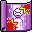
Dark MirageActive buff · Max Lv 5| Lv | MP | Cast time | Cooldown | Dodge duration |
|---|---|---|---|---|
| 1 | 30 | 0 sec | 1 sec | 5 sec |
| 2 | 33 | 0 sec | 1 sec | 5 sec |
| 3 | 36 | 0 sec | 1 sec | 5 sec |
| 4 | 39 | 0 sec | 1 sec | 5 sec |
| 5 | 42 | 0 sec | 1 sec | 5 sec |
Cabalist SpiritPassive · Max Lv 1| Possession slot | Main bonuses |
|---|---|
| Right hand | ATK/MATK +14%, S.HIT/L.HIT +14%, Max HP/MP/SP +5% |
| Left hand | ATK/MATK +7%, S.HIT/L.HIT +6%, DEF/M.DEF +14%, Max HP/MP/SP +7.5% |
| Accessory | ATK/MATK +8%, S.HIT/L.HIT +9%, S.AVOID +14%, Max HP/MP/SP +7.5% |
| Armor | ATK/MATK +5%, DEF/M.DEF +7.5%, Max HP/MP/SP +14% |
| Lv | MP | Cast time | Cooldown | Dark defense | Duration |
|---|---|---|---|---|---|
| 1 | 5 | 2.5 sec | 0.5 sec | +10 | 60 sec |
| 2 | 8 | 2.5 sec | 0.5 sec | +20 | 70 sec |
| 3 | 11 | 2.5 sec | 0.5 sec | +30 | 80 sec |
| 4 | 14 | 2.5 sec | 0.5 sec | +40 | 90 sec |
| 5 | 17 | 2.5 sec | 0.5 sec | +50 | 100 sec |
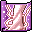
Shadow VoidActive · Max Lv 5Deals Dark magical damage to enemies in a 5x5 area around the selected ground cell.
| Lv | MP | Cast time | Cooldown | Damage rate |
|---|---|---|---|---|
| 1 | 20 | 1 sec | 0.5 sec | 240% |
| 2 | 24 | 1.5 sec | 0.75 sec | 340% |
| 3 | 28 | 2 sec | 1 sec | 440% |
| 4 | 32 | 2.5 sec | 1.25 sec | 540% |
| 5 | 36 | 3 sec | 1.5 sec | 640% |
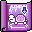
Mires IreActive field debuff · Max Lv 5| Lv | MP | Cast time | Cooldown | Slow duration | Field duration |
|---|---|---|---|---|---|
| 1 | 18 | 0.5 sec | 0.5 sec | 5 sec | 3 sec |
| 2 | 21 | 0.5 sec | 0.5 sec | 5 sec | 6 sec |
| 3 | 24 | 0.5 sec | 0.5 sec | 5 sec | 9 sec |
| 4 | 27 | 0.5 sec | 0.5 sec | 5 sec | 12 sec |
| 5 | 30 | 0.5 sec | 0.5 sec | 5 sec | 15 sec |
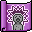
Medusa SkinActive buff · Max Lv 5| Lv | MP | Cast time | Cooldown | Normal Stone chance | Monster attack chance | Stone duration | Buff duration |
|---|---|---|---|---|---|---|---|
| 1 | 18 | 1 sec | 1 sec | 6% | 10% | 5 sec | 30 sec |
| 2 | 21 | 1 sec | 1 sec | 12% | 20% | 5 sec | 30 sec |
| 3 | 24 | 1 sec | 1 sec | 18% | 30% | 5 sec | 45 sec |
| 4 | 27 | 1 sec | 1 sec | 24% | 40% | 5 sec | 45 sec |
| 5 | 30 | 1 sec | 1 sec | 30% | 50% | 5 sec | 60 sec |
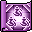
Dark Mages Hell BrandActive skill · Max Lv 3| Lv | MP | SP | Cast time | Cooldown |
|---|---|---|---|---|
| 1 | 25 | 6 | 0.5 sec | 0.5 sec |
| 2 | 20 | 6 | 0.5 sec | 0.5 sec |
| 3 | 15 | 6 | 0.5 sec | 0.5 sec |
 Spell CancelActive skill · Max Lv 1
Spell CancelActive skill · Max Lv 1Allows currently casting magic skills to be cancelled.
| Lv | SP | Cast time | Cooldown |
|---|---|---|---|
| 1 | 5 | 0 sec | 0.5 sec |
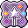
AblationActive · Max Lv 5| Lv | MP | Cast time | Cooldown | Damage rate | Base chance per status | Duration |
|---|---|---|---|---|---|---|
| 1 | 14 | 1 sec | 1 sec | 120% | 2% | 5.5 sec |
| 2 | 18 | 1.25 sec | 1 sec | 130% | 4% | 6.5 sec |
| 3 | 22 | 1.5 sec | 1 sec | 140% | 6% | 7.5 sec |
| 4 | 26 | 1.75 sec | 1 sec | 150% | 8% | 8.5 sec |
| 5 | 30 | 2 sec | 1 sec | 160% | 10% | 9.5 sec |
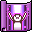
Dark BlazeActive · Max Lv 3Deals Dark magical damage to enemies around the caster.
| Lv | MP | Cast time | Cooldown | Area | Damage rate |
|---|---|---|---|---|---|
| 1 | 40 | 1.5 sec | 2 sec | 3x3 | 420% |
| 2 | 60 | 2.5 sec | 2 sec | 5x5 | 580% |
| 3 | 80 | 3.5 sec | 2 sec | 7x7 | 740% |
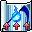
Soul SacrificeActive self-buff · Max Lv 3| Lv | MP | Cast time | Cooldown | HP cost | Duration | ATK/MATK bonus | DEF | M.DEF |
|---|---|---|---|---|---|---|---|---|
| 1 | 30 | 6 sec | 1.5 sec | 8% Max HP | 36 sec | +120% of current value | +5% | +5% |
| 2 | 45 | 5 sec | 1.5 sec | 16% Max HP | 48 sec | +160% of current value | +10% | +15% |
| 3 | 60 | 4 sec | 1.5 sec | 24% Max HP | 60 sec | +200% of current value | +15% | +25% |


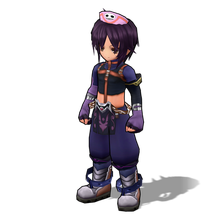
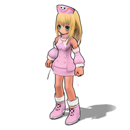
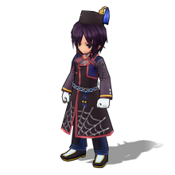
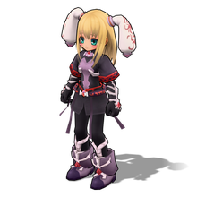
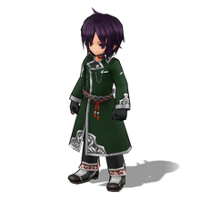
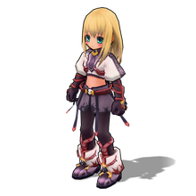